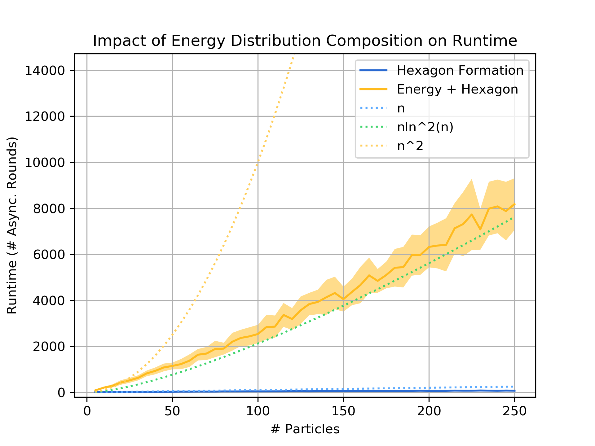
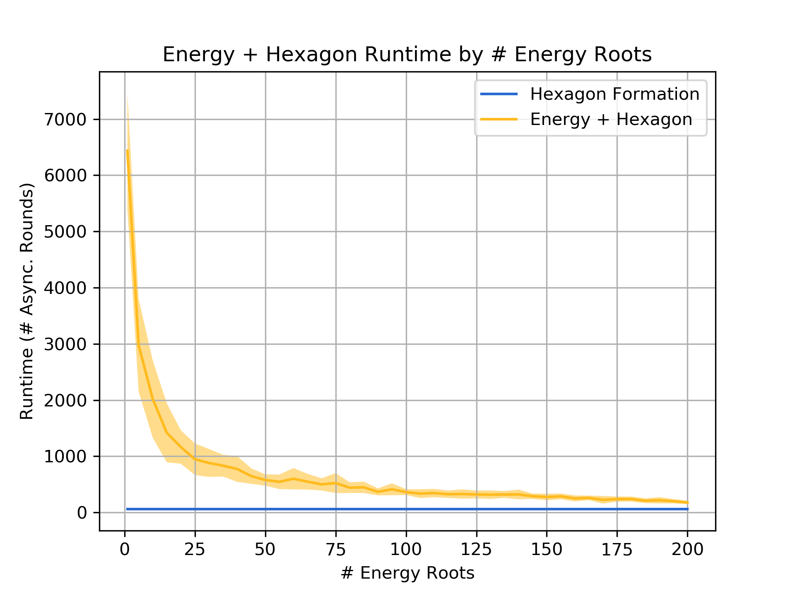

Abstract
In systems of active programmable matter, individual modules require a constant supply of energy to participate in the system’s collective behavior. These systems are often powered by an external energy source accessible by at least one module and rely on module-to-module power transfer to distribute energy throughout the system. While much effort has gone into addressing challenging aspects of power management in programmable matter hardware, algorithmic theory for programmable matter has largely ignored the impact of energy usage and distribution on algorithm feasibility and efficiency. In this work, we present an algorithm for energy distribution in the amoebot model that is loosely inspired by the growth behavior of Bacillus subtilis bacterial biofilms. These bacteria use chemical signaling to communicate their metabolic states and regulate nutrient consumption throughout the biofilm, ensuring that all bacteria receive the nutrients they need. Our algorithm similarly uses communication to inhibit energy usage when there are starving modules, enabling all modules to receive sufficient energy to meet their demands. As a supporting but independent result, we extend the amoebot model’s well-established spanning forest primitive so that it self-stabilizes in the presence of crash failures. We conclude by showing how this self-stabilizing primitive can be leveraged to compose our energy distribution algorithm with existing amoebot model algorithms, effectively generalizing previous work to also consider energy constraints.
Summary
In short, individual bacterium that are metabolically stressed (lacking in nutrients) catalyze a wave of chemical signaling that inhibits the rest of the biofilm’s nutrient uptake. This allows more nutrients to flow to the stressed bacteria, effectively solving the energy distribution problem. We model energy constraints in the amoebot model by giving each particle a battery for storing energy that it can transfer to its neighbors or spend to perform actions. We assume at least one particle in the system has access to an external energy source from which it can harvest energy. The goal of our energy distribution algorithm is to coordinate the transfer of energy between particles so that all particles meet their actions’ energy demands and at least one particle can actually perform its action within a bounded amount of time. After some initial setup, our Energy-Sharing algorithm works in the following phases repeated by each particle individually:
- Communication. Particles propagate “stress” and “inhibition” signals to communicate the energy states of starving particles throughout the system.
- Sharing. Particles harvest energy they lack from an external source (if they have access to one) and transfer energy to neighbors that need it.
- Usage. Particles that are not inhibited spend their stored energy to perform actions, participating in the collective behavior.
We prove that the Energy-Sharing algorithm allows the particle system to meet its energy demands every ${\cal O}(n)$ asynchronous rounds, where $n$ is the number of particles in the system. A simulation of the Energy-Sharing algorithm can be seen below, corresponding to Figure 2 in the paper. All particles are initially idle, with the exception of the root (with external energy access) shown with a gray/black ring. The setup phase establishes the spanning forest (or tree, in this case) rooted at particle(s) with energy access; a particle’s parent direction is shown as an arc. Since all particles start with empty batteries, stress flags (shown as red rings) quickly propagate throughout the system and inhibit flags soon follow. As energy is harvested by the root and shared throughout the system, some particles (shown with yellow rings) receive sufficient energy to meet the demand for their next action but remain inhibited from using it. This inhibition remains until all stressed particles in the system receive sufficient energy to meet their demands, at which point particles (shown with green rings) can reset their inhibit flags and use their energy. After using energy, these particles may again become stressed and trigger another stage of inhibition.

When communication of the stress/inhibit flags is disabled, the energy distribution strategy in Energy-Sharing fails (just as the bacterial biofilms fail to feed all bacteria when their signal relays are disabled). A simulation of this setting is shown below, corresponding to Figure 3 in the paper. Without the communication phase to inhibit particles from using energy while those that are stressed recharge, particles continuously share any energy they have with their descendants in the spanning forest. Thus, while the leaves of the spanning forest occasionally meet their energy demands(seen as the flickering darker green particles), even after 1000 rounds most particles have still not met their energy demand even once.

As an independent but supporting result, we present the Forest-Prune-Repair algorithm that enables a spanning forest of particles to self-repair in the presence of crash failures so long as the set of non-faulty particles remains connected and there is at least one non-crashed root. We prove that this algorithm stabilizes in a spanning forest rooted at root particles in at most ${\cal O}(m^2)$ asynchronous rounds, where $m$ is the number of particles that are severed from the spanning forest by crash failures.
The Energy-Sharing algorithm relies on an underlying spanning forest structure to communicate its stress/inhibition signals. However, if particles move as they often do in collective behaviors, this disrupts the communication structure. Thus, the Forest-Prune-Repair algorithm can be used as an underlying primitive in Energy-Sharing so that Energy-Sharing can be composed with existing amoebot model algorithms, extending them to consider energy constraints. Below is an example of Energy-Sharing composed with Basic Shape Formation, corresponding to Figure 5 in the paper.

Since Energy-Sharing meets the system’s energy demands every ${\cal O}(n)$ asynchronous rounds and Forest-Prune-Repair repairs any disruptions to the communication structure as particles move, a composed algorithm will not be impeded by the underlying energy distribution primitive, but may add significant overhead to its runtime. However, we observe reasonable performance in practice: for example, since hexagon formation terminates in ${\cal O}(n)$ rounds, our proven bounds suggest that the composed algorithm could terminate in time ${\cal O}(n^2)$ or worse but the graph below demonstrates an overhead that appears asymptotically sublinear. With the addition of more energy roots, the composed algorithm is dramatically faster, approaching the runtime achieved without energy constraints.
 As a final, informal experiment, we performed a simulation where energy is used for reproduction, mimicking the bacterial biofilms we were inspired by. In our preliminary experiments, we obtain behavior that is qualitatively similar to the biofilm growth patterns observed by Liu and Prindle et al.; in particular, the use of communication and inhibition leads to an oscillatory growth rate. The simulation below corresponds to Figure 7 in the paper.

Joshua J. Daymude
PhD, Computer Science
I am a Christian and postdoc in computer science studying collective emergent behavior and programmable matter through the lens of distributed computing, stochastic processes, and bio-inspired algorithms. I also love gaming and playing music.